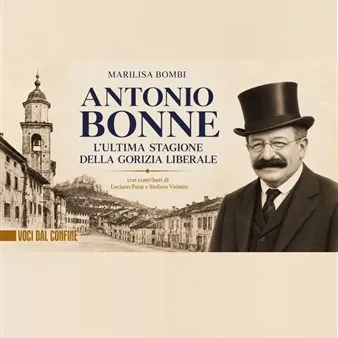

lun 9 nov · dalle 18:00
Antonio Bonne. L’ultima stagione della Gorizia liberale
Presentazione del libro di Marilisa Bombi, con contributi di Luciano Patat e Stefano Visintin. Alla presentazione, insieme all’autrice, interverrà Marco Plesnicar, che l’ha affiancata nelle ricerche d’archivio, contribuendo alla ricostruzione delle vicende storiche e personali…
 Indicazioni
Indicazioni
- Costi e prenotazioni
- Costo non indicato · Prenotazione non indicata
- Programma
- Programma da verificare. Apri la fonte ufficiale per orari e possibili aggiornamenti.
- In caso di maltempo
- Nessuna indicazione specifica pubblicata.
- Note
- Acquisito automaticamente dalla fonte.
L’EVENTO
Descrizione completa
Presentazione del libro di Marilisa Bombi, con contributi di Luciano Patat e Stefano Visintin.
Alla presentazione, insieme all’autrice, interverrà Marco Plesnicar, che l’ha affiancata nelle ricerche d’archivio, contribuendo alla ricostruzione delle vicende storiche e personali di Bonne. A coordinare l’incontro sarà il giornalista Ivan Bianchi, profondo conoscitore del mondo cattolico goriziano e dei fermenti politici e sociali che lo animarono in quegli anni.
Ha inoltre assicurato la propria partecipazione Walter Bandelj, in rappresentanza della comunità slovena. Una presenza particolarmente significativa nel ricordo di un sindaco eletto grazie a un’alleanza politica che seppe superare le divisioni nazionali in un periodo segnato da contrapposizioni sempre più profonde.
La storia di Antonio Bonne è anche la storia di una Gorizia che, all’indomani della Prima guerra mondiale e dell’annessione all’Italia, cercava un nuovo equilibrio politico e sociale, mentre l’affermazione del fascismo si preparava a cancellare le ultime esperienze di democrazia.
Eletto sindaco il 1° febbraio 1922, grazie a un’alleanza tra la componente slovena e quella friulana, Bonne rappresentò un’esperienza politica tanto significativa quanto breve, interrotta pochi mesi dopo dalle violenze fasciste. La sua vicenda, a lungo dimenticata, offre oggi l’occasione per rileggere una pagina fondamentale della storia cittadina e riflettere sulle tensioni politiche, nazionali e culturali che attraversarono Gorizia in quegli anni.
Il volume di Marilisa Bombi, Antonio Bonne. L’ultima stagione della Gorizia liberale restituisce alla memoria collettiva la figura di un uomo che cercò di difendere le istituzioni democratiche in uno dei passaggi più difficili del Novecento goriziano.
Anche la scelta del Trgovski dom come sede della presentazione ha un preciso significato storico. Proprio in questo edificio aveva sede la tipografia di Nino Paternolli, che fu tra i sostenitori della candidatura e dell’elezione di Antonio Bonne a sindaco di Gorizia. Presentare il libro in questo luogo significa dunque riallacciare idealmente un filo con quella stagione politica e con gli uomini che ne furono protagonisti, restituendo alla città un frammento della propria memoria proprio là dove una parte di quella storia prese forma.
L’incontro sarà quindi molto più di una semplice presentazione editoriale: un’occasione per tornare a discutere della storia di Gorizia, delle sue diverse anime e di una stagione nella quale il dialogo tra comunità linguistiche e culturali differenti aveva trovato un’espressione concreta nell’amministrazione della città, prima che la violenza fascista ne interrompesse il percorso.
Un invito a riscoprire Antonio Bonne, ma anche a conoscere meglio una Gorizia che troppo a lungo è rimasta ai margini della memoria collettiva.
Ingresso libero
IL PROGRAMMA
Programma e orari
Appuntamenti raccolti dalle fonti elencate. Dove manca un orario, non è ancora disponibile in questa scheda.
Programma pubblicato
- Dal 2026-11-09 al 2026-11-09
INFORMAZIONI UTILI
Prima di partire
- Controllare la fonte prima di partire.
ORGANIZZAZIONE